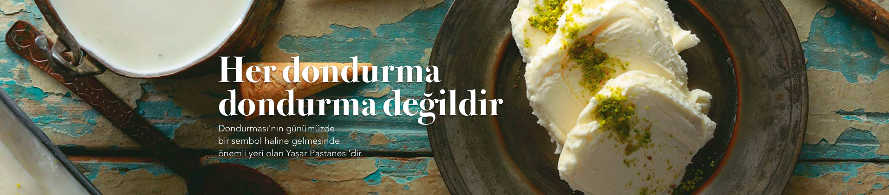
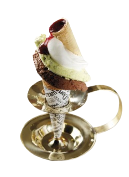
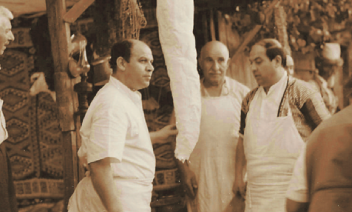
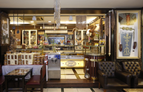
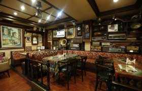
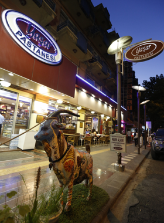
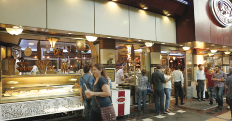
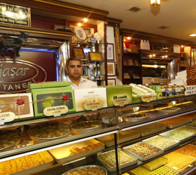
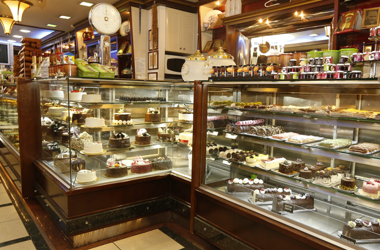

Mado Beyazı Çiftliği'nde, en yüksek standartlarda birikim ve tamamen doğal yöntemlerle üretilen ürünlerimizle yaşamınıza değer katıyoruz.

Yaşar Pastanesi, başta bir dunya markası olan MADO olmak üzere Marax, Marpop, Icemar, MADO Dondurma ve Künefeci gibi markaları çatısı altında bulunduran Yaşar Dondurma'nın ilk dükkanıdır. Bu nedenle Yaşar Pastanesi, Kahramanmaraş lezzetlerinin ülkemizde ve dünyada tanınması ve sevilmesine öncülük eden markaların beşiği konumundadır.
Hikayenin Devamı
Geleneksel Üretim ArşiviGerçek dondurmanın 168 yıllık serüveni Kahramanmaraş'ta başlamıştır. Bu 168 yıllık serüvenin mihenk taşlarından biri de Maraş Dondurması'nın günümüzde bir sembol haline gelmesinde önemli yeri olan Yaşar Pastanesi'dir. Bugün dünyanın tanıdığı Yaşar Pastanesi'nin macerası, 1969 yılında Kahramanmaraş'ta 25 metrekarelik bir dükkanda başladı. Bugün dunya markaları bünyesinde barındıran Yaşar Dondurma'nın ilk dükkanı bir anlamda beşiği olan Yaşar Pastanesi, günümüzde Maraş Dondurması dendiğinde Türkiye ve dünyada ilk akla gelen yerdir.
Yaşar Pastanesi yalnızca yöreye has malzemelerle yapılan Maraş Dondurması'nın evi değil, aynı zamanda Maraş Mutfağı'nın ve bölge kültürünün temsil edildiği bir vitrin konumundadır. Yaşar Pastanesi bir pastane olduğu kadar da ziyaretçi fotoğraflarının duvarları kapladığı ve aile yadigarı antika eşyaların sergilendiği bir müzedir.



Bu özelliği nedeniyle Kahramanmaraş'ın simgelerinden biri olan Yaşar Pastanesi'nde, aynı zamanda Maraş Dondurması'nı üne kavuşturan sırrın serüveni de sergileniyor. Maraş Dondurması'na haklı ününü veren "dövme ustalığı", Yaşar Pastanesi ziyaretçilerine uygulamalı şovlar ile gösteriliyor. Maraş Dondurması'nın meşhur kıvamının nasıl ortaya çıktığı folklorik bilgilerle ziyaretçilere aktarılıyor. Başta dondurma olmak üzere Maraş Mutfağı'nın eşsiz lezzetlerini ve Maraş kültürünü yerli yabancı tüm ziyaretçilere tanıtma ve sevdirmeyi görev edinen Yaşar Pastanesi, gerek lezzetleri gerek sunumları gerekse de misafirperverliğiyle ziyaretçilerini en iyi şekilde ağırlamaktadır.



Gerçek Lezzete Giriş Yapın
Yeni Bir Hesap Oluşturun
{kind=link}